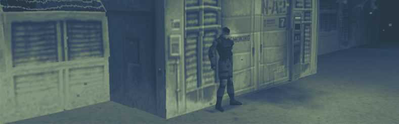
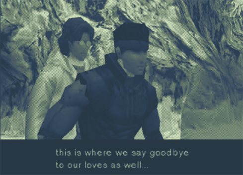
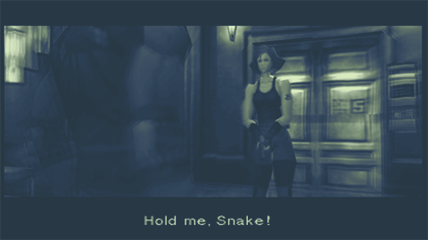
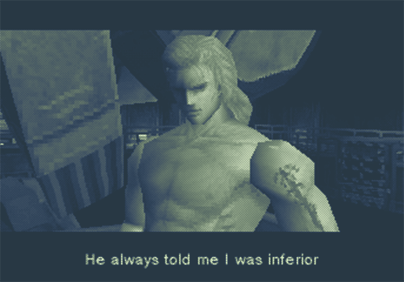
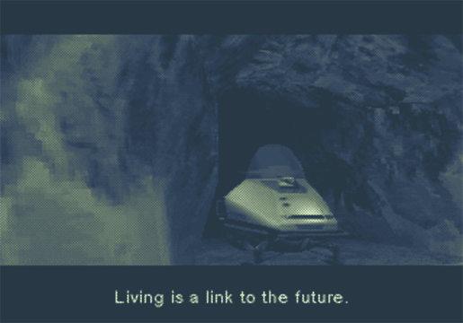

We pursue dream and challenge, wishing to create fun and excitement.

Sorry no spoiler markers once again. Honestly, I only add them to writings where I want to writing to be accessible to people who have not played the game, usually in cases where I am guilty and want to justify myself... I don't think anyone gets much out of this if they have not played MGS. I guess you could read the first two sections?
Written 08/09/26
I had first played Metal Gear Solid back in 2020. Arguably, it was the game that lead to :gestures: all of this.
Unlike other MGS games, I have never returned back to MGS1. I was surprised to see that it was easier than I remembered, but I was not shocked to see that the writing was worse than I remembered!
Still a good time, though.
The Opening
Metal Gear Solid has one of the best opening segments ever crafted. It provides an open space for the player to explore how MGS1 operates mechanically. This is slightly deceptive as the gameplay is presented as much more open than it is in truth, but deception is part of what compels the player to continue on.
The opening also quickly prepares the player for the game's narrative. This is perhaps a silly way to describe it, but MGS games are the kind of media that can make a person feel smarter just by witnessing them. The game has confidence in itself and the viewer. Jargon is employed constantly, and the game goes into great depth about the systems that make Snake's mission possible. This aspect of MGS could be argued to be its strongest asset. Nothing is worse than self-deprecation. A game that nudges the player is pandering, unconfident, and cringeworthy. MGS1 drops concepts in your lap and moves on. This process enriches and develops the game's world and trims the fat off of unneeded explanation. Most beautifully, and despite its entire nature to deliver fast, confident, and digestible truths, MGS has developed a language to expertly cover deception.
The presentation of MGS's outlandish story is the series' strongest asset, but the underlying manipulative structure is the beating heart of the best MGS games.
Gameplay Overview
MGS1 is a wonderful action game among its contemporaries, but it does not do anything particularly grand in terms of its gameplay. It's a drastic improvement over MG2:SS, but MGS2's impressive verticality and MGS3's sandbox nature both overshadow MGS1.
The stealth is fun, but flat. The soldiers could be replaced by pieces of cardboard on a trolley and it would have the same effect. The structure of the game is at least, mostly, pleasant. The player is never in one area for too long. Even if the player dies, the generous check pointing will place them very close to where they had died.
Unfortunately, the breezy structure leads to a shorter playtime, resulting in some terrible padding in a few segments. Going back for the sniper rifle isn't the worst, but changing the temperatures on the key card is egregious.
MGS bosses are entirely subjective; each person will struggle with a different battle. On a base level, each boss fight in the game is unique. They all operate on their own mechanics and feature interesting characters. Issues arise through its clunky controls and camera, which often hides pivotal information.
The battle pacing often sluggish due to the length of enemy invincibility frames. Gray Fox's fight is not difficult, personally, but it is slow. Solid Snake is only able to hit three times before Gray Fox is open to attack again. During this wait period, Gray Fox does not do anything meaningful either. To make matters worse, these attack combos only take a fraction of Gray Fox's health.
Most of the fights have a specific rhythm that rarely goes off course. The player gets a certain number of hits in and waits for the enemy to recover so they can hit again. It's not the best back-and-forth.
Another pacing issue rears its head during the Mantis and Metal Gear Rex fights. They both feature mandatory cut scenes. In the Mantis fight, this cut scene is in the beginning which makes it more tolerable, though punishing on replay. The forced cut scene during the Metal Gear Rex fight hinders the momentum of that fight. More critically, though, both cut scenes are fun or emotional moments that are lessened when they are forcibly viewed multiple times in a row.
Women
Otacon
The MGS series is cyclical in nature. Metal Gear put forward ideas that it did not have the technical or design capabilities to truly follow through with, but the concepts were strong. Metal Gear 2: Solid Snake picked up those pieces and used new technology and years of development experience to improve Metal Gear's groundwork, but there was still something missing. Metal Gear Solid closes the first pass of this loop (a loop that will continue as long as the series lives) as a near ground up remake of Metal Gear 2: Solid Snake. Nearly every element is lifted from the previous games, but they have been crystalized into their final form.
The never-ending cycle serves MGS better than most series, but it has its traps. Repetition highlights stagnation, and the poster child of stagnation in MGS is Otacon.
In MG2:SS Gray Fox has an incredible arc that is weighed down by classic MGS misogyny, which is a part of the series' mythos just as much as any box, jail cell, or escape sequence. Gustava lives and dies for Gray Fox's arc. "The woman" in Gray Fox's life gets much more respect in MGS1, but that leaves the fridging to be shuffled to Otacon.
Otacon goes through the same arc in every MGS game. He feels insecure, a woman in his life sacrifices herself, and he is determined to move forward and live a better life in her honor. His arc is at its best in MGS2 and at its lowest in MGS4. MGS is an agonizing look at what is to come.
Maybe it is unfair to judge MGS1 Otacon based on how he would develop, but it's hard to ignore the red writing on the wall. Even outside of these future prospects, Otacon's arc in MGS1 is stunted.
Unimaginable evils in our world come from people like Otacon. There are scientists out there who will take any job as long as they get to indulge in their passions and put food on the table. The people making weapons of war are engineers and scientists. They are not a special breed of those professions. Horrible creations are not born from inherently evil people.
Otacon assists in the production of Metal Gear because he is shortsighted. He lived his life to make mecha and never thought about the logical conclusion of making weapons. Otacon recognizes this and feels guilty, but this character trait only truly exists within his lab.
In the Otacon ending, when it's time for Otacon to turn to the camera and talk about what he's learned, he says that he's done with science and done with running away from people. His guilt is only a pretext for why he assists Snake; his true arc is his relationship with Sniper Wolf.

Both of their arcs have strong points on their own, but it is hard to ignore how their individual arcs are capped to create a weaker whole. All members of Foxhound meet the same fate as Sniper Wolf. She has time to exist on her own, and she has a beautiful send off, but it's frustrating to watch her life become Otacon's trauma. She cannot exist on her own because she's a woman, and Otacon's arc about ethics in science is not enough for MGS1, so I guess they really were perfect for each other.
Wolf and Otacon must be chained together, though, as they are foils to Snake and Meryl. Snake and Otacon can only develop a close relationship because they both feel insecure over their failure to secure "their women."
"I believe at any time, any place, people can fall in love with each other" is a sweet line, but it is followed by "... if you love someone, you have to be able to protect them." The love that was found was not mutually forged; it was constructed layer by layer by dead women who will only exist as tragic backstory fodder so Solid Snake and Otacon have common ground.
Solid Snake and Meryl
Meryl sits at the root of everything unenjoyable about MGS1.
One must wonder what MGS1 was trying to communicate with her character. Raiden is a similar exploration on the next generation of soldiers; he fails at every opportunity, and the people around him have no respect for him. He was his own person, and Metal Gear respected him, though. Through his failures Raiden discovers who he is and is able to detach himself from his manipulators in a way that Solid Snake never accomplished.
Meryl's mistakes are framed as her being an overconfident stupid girl, and at the halfway point of the game she becomes a literal trophy. If you win the button mashing game segment, you get her. If you lose, she's raped and killed. MGS1 even takes the time to let you know that she was given training to resist men, so she's not an "easy" win, only a true warrior could be good enough to possess her. The story and gameplay structure of MGS1 revolves around putting Meryl in her place and proving that she needs someone by her side.
The player's introduction to Meryl frames her as overly cocky and incompetent. She acted out of place and stood her ground against Snake but quickly apologized after learning who he was.
Snake insists that Meryl stay out of his way, which she does not do, resulting in her being in constant trouble. In the bathroom of the Warhead Storage Building Meryl confides in Snake that she was wrong, and despite living her life trained for war, she was not prepared for it. She makes a personal vow to try harder. Throughout this scene Meryl may not have pants on depending on how fast the player has moved through the game.
Meryl and Snake move to the left ten paces and up another, then, after which Meryl is immediately possessed by Mantis. Her body is contorted like a doll, and her inner thoughts about Solid Snake are spilled out. A generous portion of the boss fight is dedicated to preventing Meryl from being killed or assaulting her yourself so she will be out of the way.
This section might be what's most revealing about Metal Gear Solid and Meryl. She is a trained soldier, but she can't actually be a soldier. She's a woman. She will always be easy to influence, and she is made to be weaker than you and Snake. She is inherently worse at stealth due to the "natural gait" of her body. You must spend the whole game saving her, but since she's "yours" damage done by the player and Snake are viewed differently. The game will lightly punish you for attacking her, but that does not change the fact that the Mantis boss fight requires it.

Only a room away from the bathroom, Meryl is once again upset at her weakness after being controlled by Mantis. She makes another vow, takes another few steps, and is shot down by Sniper Wolf. At this moment she is fully reduced to an extended limb of Solid Snake, and her personhood revolves around how she can be used to affect Snake. Her body is manipulated to make Snake hesitate, and she is shot down to force Snake to come out of hiding.
As Snake backtracks for the sniper rifle, Meryl is dragged away to sit in an unloaded corner the rest of the game. If she does come back, it isn't due to her own strength.
The above is paramount, but Meryl is also used poorly to develop Solid Snake's character. Snake develops into a standout character in Metal Gear Solid 2, but the waters are rocky in MGS1. The stilted dialogue is part of MGS1's charm, but Snake is not a character. He just parrots what is said to him. His romance with Meryl is frustrating since it is not built up or executed in any proper manner.
For the first half of MGS1, Snake is a mouthpiece for the game to talk down to Meryl and make weird remarks about her body. Snake being annoyed by Meryl fits with his hardened character and his position as a mentor, but it does not mix well at all with the games' romantic narrative.
In the second half, after her kidnapping, Solid Snake suddenly decided that he loves Meryl enough to start a new life with her. It is understandable that Snake would put in effort to save Meryl, but there is no reason for the player to believe that he feels any true attachment. No work is done to develop their relationship; Solid Snake never truly grew. He was simply different by the game's end.
Meryl is a character designed from a misogynistic viewpoint to insist that women are naturally weak creatures. Getting to win a woman is one thing, but MGS1 takes the time to systematically tear into Meryl. Video games being misogynistic is not shocking news, but that does not mean that it's not worth considering this treatment when determining the quality of the game.
The misogyny makes MGS1 a worse game. It corrupts the smallest of moments and casts doubt on the moral of the game. Fundamentally, MGS1 is a story about how biology should not define a person. Why should any person believe in MGS1 when it believes genetics do define a person and their abilities?
The Ending
The middle section of MGS1 is a slight slog. There are promising ideas and the game upholds its action movie promise, but it is weighed down by frustrating character arcs. The game is very much a bell curve, though, and on disc change MGS1 starts to kick into gear.
Naomi Hunter and Liquid Snake are the heartbeat of MGS1, their characters are elegant explorations on genetics and manipulation. The ending sections of the game are dedicated to their corrupt worldviews and resulting actions.
On a structural level, MGS1's complexity helps fill out and expand the bounds of the story. Naomi, Foxhound, and the United States government are different forces that each manipulate Snake to differing extents. The story does not unravel into threads but instead sheds its skin to reveal numerous layers.
Liquid
Liquid is an excellent trick played against the player. It is a trick clawed into the game's plot leaving terrible gashes around its edges, but the climax is worth these lingering fractions. The reveal itself is a highlight of the game and perfectly opens up MGS1 to discuss manipulation.
Naomi slowly unravels and is outed by Liquid as a traitor. Afterwards, Liquid dramatically reveals himself as a traitor too. The attention and flair given to Liquid perfectly contrasts with the other forces controlling Snake as they are more subtle and sinister. It is a beautiful plot point that only grows in effectiveness as it loses its punch. No one was ever really working with Snake, and the ones that were fully had their hands tied.
There are too many directions to go into when discussing Liquid Snake, so let's spare time for a single interaction. Just before the Metal Gear Rex fight, Liquid delivers a standout monologue.

This monologue has become a laughingstock due to Liquid's warped view on how genetics work, but that is why the scene is so incredible. Liquid, at this moment, is laying into Snake. He points out all the manipulation that Snake fell victim to. In the end, Liquid says that Big Boss always told Liquid that he was inferior.
It is a short line, it is inconspicuous, but it fully unvails Liquid's own weakness. He allowed his entire life to be controlled by a man who hated him. He believed this man, and he died for it.
Years ago, when I played MGS1 for the first time, I did not like the reveal that Liquid actually had the dominant genes. After replaying, I understand that this beat is essential for MGS1. If Liquid had the recessive genes and lost against Solid Snake, then from birth he was marked for failure due to his biological make up. Instead, he was a manipulated and abused child who was never able to separate himself from his father. He believed he was inherently weak and tore himself apart.
MGS1 is a surprisingly anti-essentialist narrative. It's a beautiful message at its core, but something lingers on the peripheral. We know that MGS believes that we are defined by our biological make ups on some level. Women are weaker, women walk differently, women are a different kind of creature. We can push the hypocrisy aside, but it will always sit awkwardly on MGS1's outskirts.
Naomi
Naomi and Liquid operate with similar goals at heart, but Naomi offers a more emotional introspection.
As mentioned previously, within MG2:SS, Gustava was a pawn used to enhance Gray Fox. Naomi offers an inversion to that concept. This makes her a branching character between these two games, like Gray Fox. MGS1 never focuses too hard on MG2:SS, but it is nice to see a soft reboot that wants to look to its past and keep a constant level of progression.
Naomi is heavily tied to Gray Fox, but unlike Gustava, she is allowed to be her own person and truly hate Solid Snake.
In video games, it is hard to be a villainous character. Actions taken against the player are viewed as actions taken against the player as a person. The player will often find themselves especially offended by women in games that are in some way hostile. Naomi has received numerous backlash from fans, which is sad to see given how moving her story is.
She, like many other characters in the game, was manipulated by Big Boss and could not have a normal childhood. Gray Fox and Big Boss were all she had, of course she would hold animosity against Solid Snake. Like Liquid, she let this hatred take over her life, but she was able to change before it was too late. She realized that looking back would only drag her down further.
Liquid had to die on a structural level, but it is sad to see a character whose life was a constant downward spiral. Naomi is able to offer a more hopeful and loving ending to that story.
In the game's ending, Naomi delivers one of the best monologues in the series. For some players, her wording may be frustrating, but similar to the truth of Liquid's genes, for MGS1 to be true to its message, Naomi cannot truly tell Solid Snake if he will die from FoxDie.
The game is about to be over, and when it is over, we will think about the characters, but we will be in our own world. What does it mean to our reality to know anything about FoxDie and Solid Snake's fate? The ending is the final idea a game can leave you with. It could talk about Snake, sure, but it's not about him; it's about you. Naomi can't offer us any comfort, no one can. We can do our best to learn from her and Liquid, though.

Credits
You may have noticed that the grammar in this writing was strangely better than usual, that is because my wonderful, beautiful friend Chai helped edit it. Thank you Chai 🍎🍎🍎
The Meryl screenshot from the Mantis fight was a screenshot taken from my playthrough.
Notes
I'm realizing last minute that I did not comment on the games incredible ambience and atmosphere. Welp. Snow + Darkness + Jittery pixels = good
I did not bring up nuclear war at all, but it does mesh extremely well with the genetic anxiety explored throughout the game.
MGS1 is very fun to replay from a narrative perspective. They foreshadow upcomming events well. Naomi and Liquid in particular are very fun to call on the codec. When I was younger I was surprised to learn that Foxhound was tricking Snake (though I did kinda know the twist), but on replay it seems like that plot is spelled out blatantly. I wonder how easy the surprises are to piece together for someone completely new to the game. Not that that's a bad thing. Tension and built up will always be better than out of the blue surprises.
It did not fit well with the flow of the section, but Meryl being only 18, while Snake is 33, adds another nasty layer to their relationship.
We pursue dream and challenge, wishing to create fun and excitement.